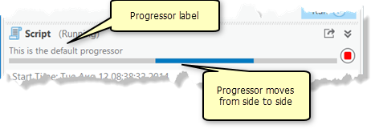
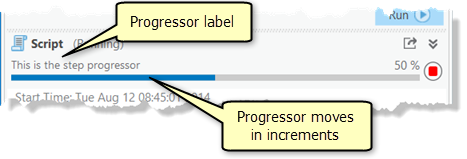

More Script Tool Features
Contents
More Script Tool Features#
1. Add Message to the tool dialog#
When a tool is run, ArcPy identifies the application it is called from. This allows you to write messages in Python. Those messages automatically appear on the tool dialog box, in Geoprocessing history, and in the Python window. It also means that any model or script tool that calls your tool has access to the messages you write.
One of the most used function to write communication message is arcpy.AddMessage(). To see other functions, check out
script tool message.
1# setup workspace
2import arcpy
3gdb_worksp = r"..\data\class_data.gdb"
4arcpy.env.workspace = gdb_worksp
5
6# setup input feature classes
7# Access soft-coded parameter
8I75 = arcpy.GetParameterAsText(1)
9blkgrp = arcpy.GetParameterAsText(0)
10cntbnd = arcpy.GetParameterAsText(2)
11lawenforce = arcpy.GetParameterAsText(3)
12
13# setup output feature
14output_gdb = arcpy.GetParameterAsText(4)
15blkgrp_select = arcpy.GetParameterAsText(5)
16I75_buff = output_gdb + "\\" + "I75_Buff"
17blkgrp_law = output_gdb + "\\" + "blkgrp_law"
18
19# geoprocessing operations
20arcpy.Buffer_analysis(I75, I75_buff, "6 Miles")
21arcpy.AddMessage("Finished buffer {}".format(I75))
22
23blkgrp_lyr_1 = arcpy.SelectLayerByLocation_management(
24 blkgrp, "WITHIN", cntbnd
25)
26blkgrp_lyr_2 = arcpy.SelectLayerByLocation_management(
27 blkgrp_lyr_1, "WITHIN", I75_buff
28)
29arcpy.AddMessage("Finished Select by location.")
30
31arcpy.SpatialJoin_analysis(
32 blkgrp_lyr_2, lawenforce, blkgrp_law,
33 "JOIN_ONE_TO_ONE", "KEEP_ALL", "", "INTERSECT", "", ""
34)
35arcpy.AddMessage("Finished creating {}".format(blkgrp_law))
36
37query_exp = "{} = 0".format('"Join_Count"')
38arcpy.FeatureClassToFeatureClass_conversion(
39 blkgrp_law, output_gdb, blkgrp_select, query_exp, "", ""
40)
41arcpy.AddMessage("All tasks are completed.")
2. Add Progress bar#
A progressor object to support progress information to be displayed in the Geoprocessing pane. It is useful when dealing with time-consuming geoprocessing tasks.
We use arcpy.SetProgressor() to create a progressor object. There are two types of progressors
default progressor
step progressor

There are two other functions we can use to update the progressor.
arcpy.SetProgressorPosition(): Moves the step progressor by an increment.arcpy.ResetProgressor(): Resets the progressor.
import arcpy
gdb_worksp = r"..\data\class_data.gdb"
arcpy.env.workspace = gdb_worksp
# setup input feature classes
# Access soft-coded parameter
I75 = arcpy.GetParameterAsText(1)
blkgrp = arcpy.GetParameterAsText(0)
cntbnd = arcpy.GetParameterAsText(2)
lawenforce = arcpy.GetParameterAsText(3)
# setup output feature
output_gdb = arcpy.GetParameterAsText(4)
blkgrp_select = arcpy.GetParameterAsText(5)
I75_buff = output_gdb + "\\" + "I75_Buff"
blkgrp_law = output_gdb + "\\" + "blkgrp_law"
# geoprocessing operations
arcpy.SetProgressor("step", "tool running", 0, 5, 1)
arcpy.Buffer_analysis(I75, I75_buff, "6 Miles")
arcpy.AddMessage("Finished buffer {}".format(I75))
arcpy.SetProgressorPosition()
blkgrp_lyr_1 = arcpy.SelectLayerByLocation_management(
blkgrp, "WITHIN", cntbnd
)
arcpy.SetProgressorPosition()
blkgrp_lyr_2 = arcpy.SelectLayerByLocation_management(
blkgrp_lyr_1, "WITHIN", I75_buff
)
arcpy.SetProgressorPosition()
arcpy.AddMessage("Finished Select by location.")
arcpy.SpatialJoin_analysis(
blkgrp_lyr_2, lawenforce, blkgrp_law,
"JOIN_ONE_TO_ONE", "KEEP_ALL", "", "INTERSECT", "", ""
)
arcpy.AddMessage("Finished creating {}".format(blkgrp_law))
arcpy.SetProgressorPosition()
query_exp = "{} = 0".format('"Join_Count"')
arcpy.FeatureClassToFeatureClass_conversion(
blkgrp_law, output_gdb, blkgrp_select, query_exp, "", ""
)
arcpy.AddMessage("All tasks are completed.")
arcpy.SetProgressorPosition()
arcpy.ResetProgressor()
3. Add an Overwrite Checkbox#
To add a checkbox for overwrite existing data, we can set a parameter using:
Data Type: Boolean
Type: Optional
Default: False
Then, access its value in the tool using arcpy.GetParameter().
import arcpy
gdb_worksp = r"..\data\class_data.gdb"
arcpy.env.workspace = gdb_worksp
# setup input feature classes
# Access soft-coded parameter
I75 = arcpy.GetParameterAsText(1)
blkgrp = arcpy.GetParameterAsText(0)
cntbnd = arcpy.GetParameterAsText(2)
lawenforce = arcpy.GetParameterAsText(3)
# setup output feature
output_gdb = arcpy.GetParameterAsText(4)
blkgrp_select = arcpy.GetParameterAsText(5)
I75_buff = output_gdb + "\\" + "I75_Buff"
blkgrp_law = output_gdb + "\\" + "blkgrp_law"
ow = arcpy.GetParameter(6)
if ow is True:
arcpy.env.overwriteOutput = True
arcpy.AddMessage(str(ow))
# geoprocessing operations
arcpy.SetProgressor("step", "tool running", 0, 5, 1)
arcpy.Buffer_analysis(I75, I75_buff, "6 Miles")
arcpy.AddMessage("Finished buffer {}".format(I75))
arcpy.SetProgressorPosition()
blkgrp_lyr_1 = arcpy.SelectLayerByLocation_management(
blkgrp, "WITHIN", cntbnd
)
arcpy.SetProgressorPosition()
blkgrp_lyr_2 = arcpy.SelectLayerByLocation_management(
blkgrp_lyr_1, "WITHIN", I75_buff
)
arcpy.SetProgressorPosition()
arcpy.AddMessage("Finished Select by location.")
arcpy.SpatialJoin_analysis(
blkgrp_lyr_2, lawenforce, blkgrp_law,
"JOIN_ONE_TO_ONE", "KEEP_ALL", "", "INTERSECT", "", ""
)
arcpy.AddMessage("Finished creating {}".format(blkgrp_law))
arcpy.SetProgressorPosition()
query_exp = "{} = 0".format('"Join_Count"')
arcpy.FeatureClassToFeatureClass_conversion(
blkgrp_law, output_gdb, blkgrp_select, query_exp, "", ""
)
arcpy.AddMessage("All tasks are completed.")
arcpy.SetProgressorPosition()
arcpy.ResetProgressor()